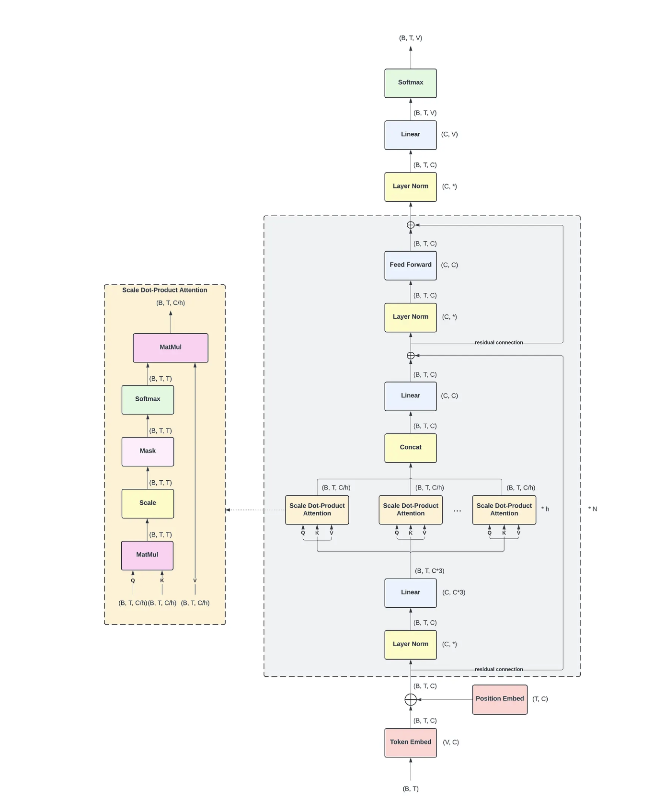

The Additivity of the Residual Stream
Decoder Block Diagram

Please note that I am not the creator of the diagram; it is taken from this blog post1, and all credit is due to the author.I’ve added this diagram here for ease of reference, and it doesn’t serve any purpose to the core parts of this blog other than providing a visual to the decoder architecture. Feel free to come back to it whenever needed.
Block Multiplication
In this section, we’re not super rigid on defining dimensions; the implicit assumption we’re making here is that all the dimensions are compatible for matrix multiplication.
We take a quick tangent to discuss block multiplication. If you’re already comfortable with this, feel free to skip this section. In general, if we have two matrices, \(A\) and \(B\) where \(A\) is of size \(n,d\) and \(B\) is of size \(d,k\) We can split them into smaller blocks and multiply each block as an individual matrix. Let’s say we split \(A\) into 4 components, such that each component is of size \(n, d/4\). Visually, it looks something like this: \[A = \begin{bmatrix} A_1 & A_2 & A_3 & A_4 \end{bmatrix} \\[1em]\]
Similarly, I might split \(B\) into 4 components, such that each component is of size \(d/4,k\). Visually, it looks something like this: \[B = \begin{bmatrix} B_1 \\ B_2 \\ B_3 \\ B_4 \end{bmatrix} \\[1em]\]
Now, the result of doing \(AB\) is equivalent to multiplying them component-wise. Therefore, we can say, \(AB\) \[ \begin{align*} A &= \begin{bmatrix} A_1 & A_2 & A_3 & A_4 \end{bmatrix} \\[1em] B &= \begin{bmatrix} B_1 \\ B_2 \\ B_3 \\ B_4 \end{bmatrix} \\[1em] AB &= \begin{bmatrix} A_1 & A_2 & A_3 & A_4 \end{bmatrix} \begin{bmatrix} B_1 \\ B_2 \\ B_3 \\ B_4 \end{bmatrix} \\[1em] AB &= A_1B_1 + A_2B_2 + A_3B_3 + A_4B_4 \end{align*} \] Here’s a tractable example to show this: \[ \begin{align*} % Define the original matrices A &= \begin{bmatrix} 1 & 2 \\ 0 & 1 \\ 2 & 0 \end{bmatrix}, \quad B = \begin{bmatrix} 1 & 2 & 0 & 1 \\ 0 & 1 & 3 & 0 \end{bmatrix} \\[1.5em] % Define the partitioned blocks A_1 &= \begin{bmatrix} 1 \\ 0 \\ 2 \end{bmatrix}, \quad A_2 = \begin{bmatrix} 2 \\ 1 \\ 0 \end{bmatrix} \\[1em] B_1 &= \begin{bmatrix} 1 & 2 & 0 & 1 \end{bmatrix}, \quad B_2 = \begin{bmatrix} 0 & 1 & 3 & 0 \end{bmatrix} \\[1.5em] % Compute the independent block products (outer products) A_1B_1 &= \begin{bmatrix} 1 \\ 0 \\ 2 \end{bmatrix} \begin{bmatrix} 1 & 2 & 0 & 1 \end{bmatrix} = \begin{bmatrix} 1 & 2 & 0 & 1 \\ 0 & 0 & 0 & 0 \\ 2 & 4 & 0 & 2 \end{bmatrix} \\[1em] A_2B_2 &= \begin{bmatrix} 2 \\ 1 \\ 0 \end{bmatrix} \begin{bmatrix} 0 & 1 & 3 & 0 \end{bmatrix} = \begin{bmatrix} 0 & 2 & 6 & 0 \\ 0 & 1 & 3 & 0 \\ 0 & 0 & 0 & 0 \end{bmatrix} \\[1.5em] % Sum the components to reconstruct AB AB &= A_1B_1 + A_2B_2 \\[1em] AB &= \begin{bmatrix} 1 & 2 & 0 & 1 \\ 0 & 0 & 0 & 0 \\ 2 & 4 & 0 & 2 \end{bmatrix} + \begin{bmatrix} 0 & 2 & 6 & 0 \\ 0 & 1 & 3 & 0 \\ 0 & 0 & 0 & 0 \end{bmatrix} \\[1em] AB &= \begin{bmatrix} 1 & 4 & 6 & 1 \\ 0 & 1 & 3 & 0 \\ 2 & 4 & 0 & 2 \end{bmatrix} \end{align*} \]
Residual Stream
The First Layer: Attention
One of the things that makes the transformer so powerful and versatile is the residual stream. It allows different components of the model to interact in a very nice way. It’s useful to think of the residual stream as an information highway (or, as another nice analogy from NotebookLM, as a whiteboard passed down a line of students, with each student writing something on it). I think this is a very interesting component and worth going through in detail. Most of the work in this post is an adaptation/explanation of Anthropic’s paper titled ” A Mathematical Framework for Transformer Circuits,” which is one of the foundational papers in the field of mechanistic interpretability.
To better understand the residual stream, let’s follow it along its journey. Let’s say we have an input of size \((n,d)\). Note that, for simplicity, we’re ignoring batches, since they don’t change the explanation and introduce another index to worry about. We first get our token and position embeddings, and both of them are in \(\mathbb{R}^{n,d}\), and we can represent them by \(e\) and \(p\) respectively (we use \(e\) for the token embedding so it doesn’t collide with the layer index \(t\) later on). Before we touch any decoder block, we add these two results to the residual stream, so we get: \[r_0 = p + e\] Where \(r_0 \in \mathbb{R}^{n,d}\)
Now, let’s say we have \(k\) attention heads with output \(A_i\) respectively, where \(A_i \in \mathbb{R}^{n,d_k}\) where \(d_k = d/k\). Typically, we concatenate all the heads together, producing a concatenated head output \(H\): \[ H \in \mathbb{R}^{n,d} \] Now, the result of the concatenation yields an \((n,d)\) matrix. We then multiply this by an output matrix \(W_O \in \mathbb{R}^{d,d}\) and add an output bias \(b_O \in \mathbb{R}^{1,d}\) (broadcast over the \(n\) rows), so the result going into the residual stream is of dimension \((n,d)\).
Now, we want to show that the result of each head is written into the residual stream as a separate additive component. In other words, the residual stream after the attention heads — the intermediate stream, which we’ll write as \(\tilde r_1\) — can be written as follows: \[ \tilde r_1 = r_0 + A_1()+A_2()+....+A_k() \] (Note this formula is written only for the first layer, we’ll build a more general formalization later; also for now don’t worry about the brackets we’ll arrive at that shortly - they are used to represent placeholders for values from the \(W_O\) matrix).
Now, notice how the concatenated head output \(H\) forms nice blocks in the matrix? We can use that as a natural structure to perform block multiplication.
Let each attention head output be
\[ A_i \in \mathbb{R}^{n \times d_k}, \qquad d_k = \frac{d}{k}. \]
Now let the concatenated attention head output be
\[ H = \operatorname{Concat}(A_1, A_2, \ldots, A_k) = \begin{bmatrix} A_1 & A_2 & \cdots & A_k \end{bmatrix} \]
where
\[ A_i \in \mathbb{R}^{n \times d_k}, \qquad H \in \mathbb{R}^{n \times d}. \]
The output projection matrix is
\[ W_O \in \mathbb{R}^{d \times d}. \]
Since \(H\) is split into \(k\) side-by-side blocks, we can split \(W_O\) into \(k\) matching blocks stacked vertically:
\[ W_O = \begin{bmatrix} W_O^{(1)} \\ W_O^{(2)} \\ \vdots \\ W_O^{(k)} \end{bmatrix} \]
where
\[ W_O^{(i)} \in \mathbb{R}^{d_k \times d}. \]
Then, by block matrix multiplication,
\[ \begin{aligned} H W_O &= \begin{bmatrix} A_1 & A_2 & \cdots & A_k \end{bmatrix} \begin{bmatrix} W_O^{(1)} \\ W_O^{(2)} \\ \vdots \\ W_O^{(k)} \end{bmatrix} \\[0.75em] &= A_1 W_O^{(1)} + A_2 W_O^{(2)} + \cdots + A_k W_O^{(k)} \\[0.75em] &= \sum_{i=1}^{k} A_i W_O^{(i)}. \end{aligned} \]
Each term has shape
\[ A_i W_O^{(i)} \in \mathbb{R}^{n \times d}. \]
Therefore, the attention layer writes into the residual stream as
\[ \begin{aligned} \tilde r_1 &= r_0 + H W_O + b_O \\[0.75em] &= r_0 + \sum_{i=1}^{k} A_i W_O^{(i)} + b_O \\[0.75em] &= r_0 + A_1 W_O^{(1)} + A_2 W_O^{(2)} + \cdots + A_k W_O^{(k)} + b_O. \end{aligned} \]
The First Layer: MLP
In the GPT-2 paper, the MLP layer has two parts. First, we up-project the input i.e. we take an \(x \in \mathbb{R}^d\) and get a representation in \(\mathbb{R}^{d_{\text{hid}}}\) - this is our hidden representation. This then gets passed through a \(\text{GELU}\) activation function and we have the activations of the MLP, let’s call it \(H\). The columns of \(H\) correspond to neurons (if you look at the weight matrix, the rows correspond to the neurons). This \(H\) now, must be down-projected so it can be added back into the residual stream, and this is done by down-projecting \(H\) from \(\mathbb{R}^{d_{\text{hid}}}\) into \(\mathbb{R}^d\).
We can make the explanation more succinct using the following equations. For the MLP, let’s say our input \(X\) is in \(\mathbb{R}^{n,d}\). A fully connected MLP can be written as follows: \[ \begin{aligned} H &= \text{GELU}(XW_h^T+b_h) \\ Y &= HW_{\text{down}}^T+b_y \end{aligned} \] Here \(W_h\) is the weight matrix that takes our input to the hidden dimension, and has size \(d_{\text{hid}},d\) and \(H \in \mathbb{R}^{n,d_\text{hid}}\). Similarly, \(W_{\text{down}}\) is of the size \(d, d_{\text{hid}}\) (this is the down-projection that maps the hidden representation back down to the model dimension), and our final \(Y \in \mathbb{R}^{n,d}\). Note we use \(W_{\text{down}}\) here, rather than \(W_O\), to avoid clashing with the attention output projection \(W_O\) from the previous section.
Now, \(Y\) is what gets added into our residual stream, so we might take a similar approach to the previous section and show that each neuron of the MLP contributes additively. In essence, we want to show that \(HW_{\text{down}}^T\) is linear in the columns of H.
Recall that the columns of \(H\) correspond to neurons. So, we split \(H\) into \(d_{\text{hid}}\) side-by-side column blocks, one per neuron:
\[ H = \begin{bmatrix} h_1 & h_2 & \cdots & h_{d_{\text{hid}}} \end{bmatrix} \]
where
\[ h_i \in \mathbb{R}^{n \times 1}, \qquad H \in \mathbb{R}^{n \times d_{\text{hid}}}. \]
To match this partition, we split \(W_{\text{down}}^T\) into \(d_{\text{hid}}\) row blocks stacked vertically:
\[ W_{\text{down}}^T = \begin{bmatrix} w_{\text{down}}^{(1)} \\ w_{\text{down}}^{(2)} \\ \vdots \\ w_{\text{down}}^{(d_{\text{hid}})} \end{bmatrix} \]
where
\[ w_{\text{down}}^{(i)} \in \mathbb{R}^{1 \times d}, \qquad W_{\text{down}}^T \in \mathbb{R}^{d_{\text{hid}} \times d}. \]
Then, by block matrix multiplication,
\[ \begin{aligned} H W_{\text{down}}^T &= \begin{bmatrix} h_1 & h_2 & \cdots & h_{d_{\text{hid}}} \end{bmatrix} \begin{bmatrix} w_{\text{down}}^{(1)} \\ w_{\text{down}}^{(2)} \\ \vdots \\ w_{\text{down}}^{(d_{\text{hid}})} \end{bmatrix} \\[0.75em] &= h_1 w_{\text{down}}^{(1)} + h_2 w_{\text{down}}^{(2)} + \cdots + h_{d_{\text{hid}}} w_{\text{down}}^{(d_{\text{hid}})} \\[0.75em] &= \sum_{i=1}^{d_{\text{hid}}} h_i w_{\text{down}}^{(i)}. \end{aligned} \]
Each term has shape
\[ h_i w_{\text{down}}^{(i)} \in \mathbb{R}^{n \times d}. \]
Therefore, the MLP layer adds its contribution on top of \(\tilde r_1\) (the post-attention intermediate stream from the previous section). Attention produced the intermediate \(\tilde r_1\); adding the MLP completes the first decoder block and gives the post-MLP stream \(r_1\). Substituting in the expansion of \(\tilde r_1\) we derived for the attention layer, the residual stream at the end of the first decoder block is
\[ \begin{aligned} r_1 &= \tilde r_1 + H W_{\text{down}}^T + b_y \\[0.75em] &= \tilde r_1 + \sum_{i=1}^{d_{\text{hid}}} h_i w_{\text{down}}^{(i)} + b_y \\[0.75em] &= \underbrace{\left(r_0 + \sum_{j=1}^{k} A_j W_O^{(j)} + b_O\right)}_{\tilde r_1 \text{ from the attention section}} + \sum_{i=1}^{d_{\text{hid}}} h_i w_{\text{down}}^{(i)} + b_y \\[0.75em] &= r_0 + \underbrace{A_1 W_O^{(1)} + \cdots + A_k W_O^{(k)}}_{\text{one term per attention head}} + \underbrace{h_1 w_{\text{down}}^{(1)} + \cdots + h_{d_{\text{hid}}} w_{\text{down}}^{(d_{\text{hid}})}}_{\text{one term per MLP neuron}} + b_O + b_y. \end{aligned} \]
So at the end of the first decoder block, the residual stream is just \(r_0\) plus one additive contribution per attention head and one additive contribution per MLP neuron (plus the two bias terms), exactly the additivity claim we set out to show.
A General Formulation For The Residual Stream
Now, let’s say we’re at layer \(t\), we can write the residual stream recursively as follows. As before, \(\tilde r_t = r_{t-1} + A\) is the post-attention intermediate stream and \(r_t = \tilde r_t + MLP\) is the post-MLP stream at the end of the block: \[ \begin{aligned} \tilde r_t &= r_{t-1}+A \\ r_t &= \tilde r_t+\text{MLP} \\ r_0 &= p + e \end{aligned} \] Where \(A\) is the output of the MHA attention and MLP is the result of down projecting the hidden state of the MLP into the residual stream. If we have \(k\) attention heads, and \(m\) hidden dimensions, we can write \(r_t\) as follows:
\[ \begin{aligned} r_t &= r_{t-1} + \underbrace{\sum_{i=1}^{k} A_i^{(t)} W_O^{(t,\,i)} + b_O^{(t)}}_{A \text{ (per-head contributions)}} + \underbrace{\sum_{j=1}^{m} h_j^{(t)} w_{\text{down}}^{(t,\,j)} + b_y^{(t)}}_{\text{MLP (per-neuron contributions)}} \end{aligned} \]
Here the superscript \((t)\) tags each quantity with the layer it belongs to: \(A_i^{(t)}\) is the output of attention head \(i\) at layer \(t\), \(W_O^{(t,\,i)}\) is the \(i\)-th row-block of that layer’s attention output projection, \(b_O^{(t)}\) is that layer’s attention output bias, \(h_j^{(t)}\) is the activation column for neuron \(j\) at layer \(t\), \(w_{\text{down}}^{(t,\,j)}\) is the \(j\)-th row-block of that layer’s MLP down-projection, and \(b_y^{(t)}\) is that layer’s MLP bias.
Because the recursion just adds new terms at each step, we can unroll it all the way back to \(r_0\):
\[ \begin{aligned} r_t &= r_0 + \sum_{\ell=1}^{t} \left[ \sum_{i=1}^{k} A_i^{(\ell)} W_O^{(\ell,\,i)} + \sum_{j=1}^{m} h_j^{(\ell)} w_{\text{down}}^{(\ell,\,j)} + b_O^{(\ell)} + b_y^{(\ell)} \right] \\[0.75em] &= \underbrace{p + e}_{r_0} + \underbrace{\sum_{\ell=1}^{t} \sum_{i=1}^{k} A_i^{(\ell)} W_O^{(\ell,\,i)}}_{\text{every attention head, every layer}} + \underbrace{\sum_{\ell=1}^{t} \sum_{j=1}^{m} h_j^{(\ell)} w_{\text{down}}^{(\ell,\,j)}}_{\text{every MLP neuron, every layer}} + \sum_{\ell=1}^{t} \left(b_O^{(\ell)} + b_y^{(\ell)}\right). \end{aligned} \]
So at any layer \(t\), the residual stream can be written as the initial embedding \(r_0 = p + e\) plus additive writes from the attention heads, MLP neurons, and bias terms in every layer up to \(t\). This is the sense in which the residual stream is additive: once a component has computed its output, it writes that output by adding it to the stream. This does not mean the whole transformer is linear, or that the added terms are computed independently. Each later head and neuron reads the accumulated stream, and those reads pass through nonlinear operations such as LayerNorm, attention softmax, and GELU.
A Couple of Caveats
What about LayerNorm? A real GPT-2 block is closer to
\[ \tilde r_t = r_{t-1} + \text{Attn}(\text{LN}_1(r_{t-1})) \]
\[ r_t = \tilde r_t + \text{MLP}(\text{LN}_2(\tilde r_t)). \]
LayerNorm is nonlinear, so it does not distribute over the additive decomposition of the residual stream. But it is applied on the read path into a sublayer, not as an in-place replacement of the residual stream itself. The residual stream update is still additive, even though the function computing each added term is not linear.
What the claim does and doesn’t say. The additivity claim is about how completed component outputs are written into the residual stream. It does not mean the network is globally linear, or that later components are independent of earlier ones. Every later head and neuron reads this accumulated stream as its input, so the components are very much coupled. It is worth separating two operations here. The write is additive: a component adds its output as a new term. The read can include linear projections that distribute over their inputs, but in a real transformer those projections are wrapped with nonlinear operations like LayerNorm and attention softmax. So the residual stream can be decomposed into additive writes after a forward pass, but the functions that produce those writes are not themselves linear.
Notes
Please note that this post was written by me and proofread by an AI. Since I haven’t had another pair of (human) eyes read this, the post is prone to errors. If you happen to find any, please notify me at adityaiyer{dot}m{@}gmail{dot}com.
Feedback is always welcome! If you have any comments on how things could have been done differently or on areas where my explanation was lacking, please feel free to contact me.
Errata
- To be updated on the fly.